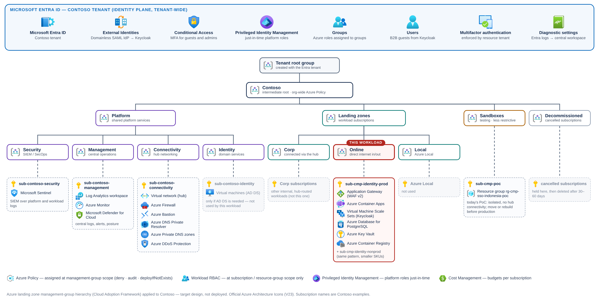
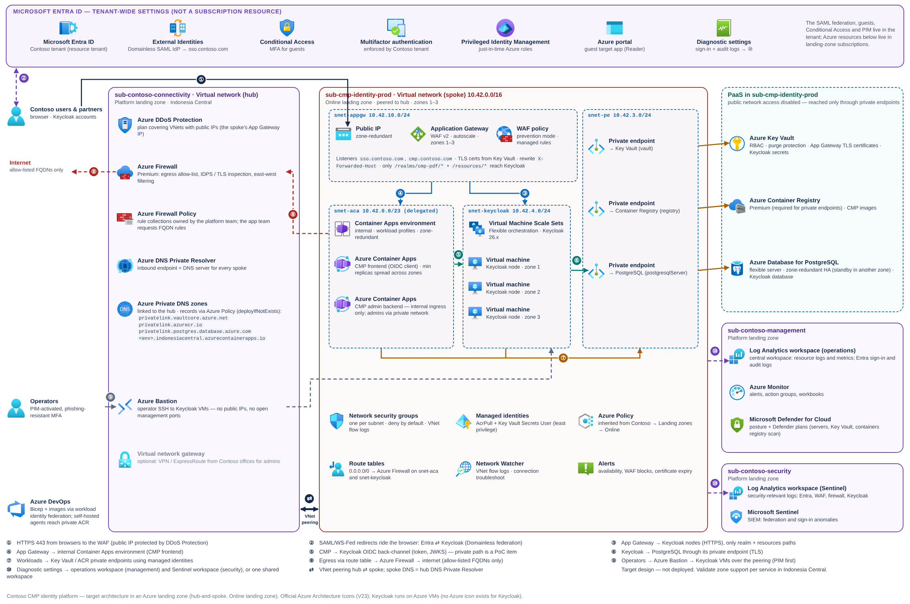

Target architecture in an Azure landing zone
Where the Contoso CMP identity platform lands in an Azure landing zone, how traffic, DNS, identity and policy flow, and exactly what changes from the PoC.
This page describes the target architecture for running the Contoso CMP identity platform in an Azure landing zone. It is a design, not a deployment: none of the resources below exist yet. It combines Microsoft Learn guidance (Azure landing zone and Well-Architected) with what the PoC proved. Anything the PoC has not shown is marked PoC item and listed in the backlog. Today's deployed PoC topology is on page 5.
Azure landing zone in one page#
Microsoft's Azure landing zone guidance separates a platform landing zone (shared services such as identity, connectivity and management, run by central teams) from application landing zones (subscriptions that host workloads), and organises the design decisions into eight design areas (Learn: What is an Azure landing zone) (Learn: design areas). Management groups organise the subscriptions so that Azure Policy and access are inherited from the top down (Learn: management groups).
| Management group | Purpose in the Azure landing zone reference | What it means for this workload |
|---|---|---|
| Intermediate root (Contoso) | Top of the organisation's hierarchy under the tenant root group; most policy assignments start here. | Inherits Contoso's organisation-wide guardrails. |
| Platform → Security / Management / Connectivity / Identity | Shared platform subscriptions: SIEM, central Log Analytics, hub networking (firewall, private DNS), and domain services. | Consumes the hub, the central workspace and Microsoft Sentinel — it does not own them. |
| Landing zones → Corp | Workloads that need connectivity to the corporate network through the hub. | Option B below (ingress through a central gateway). |
| Landing zones → Online | Workloads that might need direct inbound or outbound internet connectivity, or that might not need a virtual network. | Chosen placement — browsers anywhere must reach Keycloak's SAML endpoint. |
| Sandboxes | Testing and exploration, less restrictive policies, isolated from Corp and Online. | Where a PoC like today's belongs. |
| Decommissioned | Cancelled subscriptions before deletion. | End of life for the PoC subscription. |


Two Learn recommendations shape the hierarchy: keep it flat (three to four levels) and do not create management groups per environment or region — separate production and non-production with subscriptions instead (Learn). That is why the figure shows sub-cmp-identity-prod and sub-cmp-identity-nonprod side by side under Online.
Placement decision: Online or Corp#
Keycloak is the SAML identity provider for Entra B2B guests and the OpenID Connect provider for CMP. Both protocols are front-channel: the user's browser carries the SAML AuthnRequest to Keycloak and the signed response back to Entra (see page 4). So Keycloak's realm endpoints must be reachable from wherever guests sign in — in practice, the internet.
| Option A — Online landing zone (chosen) | Option B — Corp landing zone | |
|---|---|---|
| Ingress | Application Gateway WAF v2 with a public IP inside the workload spoke | A centrally managed gateway (for example Azure Front Door or a hub Application Gateway) owned by the platform team |
| Learn guidance | Use a web application firewall within the landing-zone virtual network for inbound HTTP/S (Learn) | Corp landing zones connect to the corporate network through the hub (Learn); the internet edge is then a shared service |
| Pros | Workload team owns its listeners, WAF exclusions and certificates — useful while SAML/OIDC tuning is still active | One internet edge for the whole estate; no public IP in workload subscriptions |
| Cons | One more public IP to govern (DDoS plan, policy exemption if Contoso denies public IPs broadly) | Every WAF exclusion or path change becomes a platform ticket |
| Choose when | Contoso allows internet-facing workloads in Online (the ALZ default intent) | Contoso policy forbids public IPs outside the platform |
Both options are valid ALZ patterns. If Contoso already runs Azure Front Door with WAF globally, Learn's guidance is to put the WAF policy on Front Door and lock the Application Gateway to accept traffic only from Front Door (Learn). The rest of this page assumes Option A.
Target architecture#


| # | Flow | Path and protocol | Control |
|---|---|---|---|
| ① | Browser → Application Gateway | HTTPS 443 to the public frontend for sso.contoso.com and cmp.contoso.com | WAF policy; TLS certificate from Key Vault; DDoS Network Protection on the public IP (Learn) |
| ② | Entra ⇄ Keycloak (SAML) | Front-channel through the browser (HTTP-Redirect / HTTP-POST) | Signed response and assertion; Entra validates against the Keycloak metadata certificate |
| ③ | Application Gateway → Keycloak nodes | HTTPS to the scale-set NICs (backend pool) | Path map sends only /realms/cmp-pdf/* and /resources/*; NSG allows only the gateway subnet |
| ④ | Application Gateway → CMP frontend | HTTPS to the internal Container Apps environment's static IP | X-Forwarded-Host rewrite so OIDC redirects keep the public host (Learn) |
| ⑤ | CMP → Keycloak back-channel | Token and JWKS calls to the same issuer host, resolved privately | PoC item — the PoC already does this with a split-horizon private zone (see below) |
| ⑥ | Keycloak → PostgreSQL | TLS 5432 through the server's private endpoint | Public network access disabled; private endpoint is Learn's recommended alternative to VNet integration (Learn) |
| ⑦ | Workloads → Key Vault / Container Registry | Private endpoints in snet-pe | Managed identities with data-plane roles only; ACR Premium is required for private endpoints (Learn) |
| ⑧ | Spoke → internet | Route table 0.0.0.0/0 → Azure Firewall private IP | FQDN allow-list in Firewall Policy; never default outbound access (Learn) |
| ⑨ | Operators → Keycloak VMs | Azure Bastion in the hub, across the peering | No public IPs or open management ports on VMs (Learn); Azure roles activated through PIM |
| ⑩ | Telemetry | Diagnostic settings → operations workspace (management subscription); security-relevant logs also → the Microsoft Sentinel workspace (security subscription) | Entra sign-in and audit logs go to the central workspace (Learn); one shared workspace is also valid — a platform decision. Detail: page 5c, Figure 1 |
Components and why they were chosen
| Azure service | Role here | Key configuration | Pillar driver |
|---|---|---|---|
| Application Gateway (WAF v2) | Single internet entry for Keycloak realm paths and CMP | Zone-redundant, autoscaling; listeners per host; path-based rules; rewrite set; Key Vault certificates (Learn) | Security, Reliability |
| Web Application Firewall policy | Layer-7 protection | Start in Detection, tune, then Prevention (Learn); exclusions only for proven false positives | Security |
| Azure Container Apps (internal environment) | CMP frontend and admin backend | internal: true, workload profiles, availability-zone support, at least three replicas for ingress-exposed apps (Learn) | Reliability, Security |
| Virtual Machine Scale Sets (Flexible) | Keycloak cluster nodes across zones 1–3 | No public IPs; Ubuntu 24.04; Keycloak config identical on every node; spread across zones (Learn) | Reliability |
| Azure Database for PostgreSQL (flexible server) | Keycloak database | Zone-redundant HA (synchronous standby in another zone) (Learn); public access disabled; private endpoint | Reliability |
| Azure Key Vault | TLS certificates, Keycloak and CMP secrets | RBAC, soft delete + purge protection, public access disabled (all already true in the PoC) | Security |
| Azure Container Registry (Premium) | CMP images | Private endpoint; public network access disabled; digest-pinned deployments | Security, Operational Excellence |
| Azure Firewall (hub, platform-owned) | Egress control and inspection | Premium for TLS inspection and IDPS (Learn); FQDN rules requested by the workload team | Security |
| Azure Bastion (hub) | Operator access to Keycloak VMs | No SSH/RDP exposure (Learn) | Security, Operational Excellence |
| Azure DNS Private Resolver + Private DNS zones (hub) | Name resolution for private endpoints and split-horizon names | Zones linked to the hub; spokes use the resolver's inbound endpoint (Learn) | Operational Excellence |
| Log Analytics, Azure Monitor, Defender for Cloud, Microsoft Sentinel | Observability and security operations | Operations workspace in the management subscription; Sentinel on a workspace in the security subscription (or one shared workspace); alerts per workload | Operational Excellence, Security |
Ingress: Application Gateway in front of Keycloak and CMP#
The PoC published Keycloak with a VM public IP and Caddy, which proxied only /realms/cmp-pdf/* and /resources/*. The landing-zone design keeps exactly that exposure rule but moves it to Application Gateway, so the VMs lose their public IPs and TLS certificates come from Key Vault instead of ACME on the VM.
- 1Listeners and certificates
Two HTTPS listeners (
sso.contoso.com,cmp.contoso.com) using certificates referenced from Key Vault through the gateway's user-assigned identity, which needs the Key Vault Secrets User role; gateway instances poll Key Vault at four-hour intervals for renewed versions (Learn). Public DNS A records for both names point at the gateway's public IP. - 2Path map for Keycloak
Rules for
/realms/cmp-pdf/*and/resources/*go to the Keycloak backend pool; a default rule for thessolistener returns nothing useful (for example, a redirect to the CMP home page). The Keycloak admin console and Admin REST API are never published — operators reach them privately. - 3CMP backend
The internal Container Apps environment has a static private IP. Learn's pattern is a private DNS zone named after the environment's default domain with
*and@A records to that IP, and an Application Gateway backend that targets the app's FQDN (Learn). - 4Host header for OIDC
Add a rewrite that sets
X-Forwarded-Hostto{http_req_host}, which Learn calls out for apps that build redirect URLs (such as OIDC sign-in) (Learn). Application Gateway also insertsX-Forwarded-For,X-Forwarded-ProtoandX-Forwarded-Port(Learn). On the Keycloak side, a full-URLhostnamepins every front-end URL and the issuer regardless of the Host header (Keycloak: hostname). - 5Health probe
Probe a path that is already published and proves the realm loads its keys — the SAML descriptor
/realms/cmp-pdf/protocol/saml/descriptor. Keycloak exposes/healthand/metricson its management port 9000 when enabled (Keycloak: management interface) — keep that port private and use it for the scale set's own health checks.
// Excerpt - Application Gateway rewrite set and path map (illustrative, validate with what-if)
rewriteRuleSets: [
{
name: 'cmp-forwarded-host'
properties: {
rewriteRules: [
{
name: 'x-forwarded-host'
ruleSequence: 100
actionSet: {
requestHeaderConfigurations: [
{ headerName: 'X-Forwarded-Host', headerValue: '{http_req_host}' }
]
}
}
]
}
}
]
// Reference the rewrite set from the CMP routing rule:
// rewriteRuleSet: { id: resourceId('Microsoft.Network/applicationGateways/rewriteRuleSets', agwName, 'cmp-forwarded-host') }
urlPathMaps: [
{
name: 'sso-paths'
properties: {
defaultRedirectConfiguration: { id: resourceId('Microsoft.Network/applicationGateways/redirectConfigurations', agwName, 'sso-to-cmp') }
pathRules: [
{
name: 'keycloak-realm'
properties: {
paths: [ '/realms/cmp-pdf/*', '/resources/*' ]
backendAddressPool: { id: resourceId('Microsoft.Network/applicationGateways/backendAddressPools', agwName, 'keycloak') }
backendHttpSettings: { id: resourceId('Microsoft.Network/applicationGateways/backendHttpSettingsCollection', agwName, 'keycloak-https') }
}
}
]
}
}
]
az deployment group what-if and a test in the non-production subscription.# keycloak.conf on every scale-set node (excerpt, target design)
hostname=https://sso.contoso.com
proxy-headers=xforwarded
http-enabled=false
https-port=8443
health-enabled=true
metrics-enabled=true
db=postgres
db-url=jdbc:postgresql://<pg-server>.postgres.database.azure.com:5432/keycloak?sslmode=verify-full
# Cluster discovery between nodes and the database CA bundle are PoC items - see the backlog
proxy-headers when the proxy overwrites those headers, as Keycloak's reverse-proxy guide warns.- WAF and SAML payloads. The SAML AuthnRequest and RelayState arrive at Keycloak as long encoded parameters. Run the WAF policy in Detection first, replay the full guest sign-in (G8 T4–T6), and add narrowly scoped exclusions only for rules that actually fire.
- Back-end TLS. Application Gateway v2 must trust the certificate presented by Keycloak on 8443 (public CA, or an uploaded trusted root for an internal CA). Decide which, and automate its rotation.
- Back-channel name resolution (⑤). CMP must call the same issuer URL that browsers see. The PoC proved this pattern with a private zone that resolves the Keycloak host name to a private address; in the landing zone the zone for
sso.contoso.commust be hosted where the platform team manages DNS, pointing at a private frontend IP on the same gateway (v2 supports a private and a public frontend together (Learn: FAQ)).
Private endpoints and DNS at scale#
In an Azure landing zone, the privatelink.* private DNS zones live centrally in the connectivity subscription and are linked to the hub; spokes use the DNS Private Resolver; and Azure Policy both denies creating those zones in landing zones and uses deployIfNotExists to register each new private endpoint in the central zone (Learn: Private Link and DNS integration at scale). Learn's PostgreSQL guidance describes the same hub-hosted pattern for privatelink.postgres.database.azure.com (Learn). The resolver's inbound and outbound endpoints each need their own subnet of /28 to /24 (Learn) — a platform-team concern, listed so the workload team knows where its DNS answers come from.
| Private endpoint | Group ID | Central private DNS zone |
|---|---|---|
| Key Vault | vault | privatelink.vaultcore.azure.net |
| Container Registry (Premium) | registry | privatelink.azurecr.io (registry and data endpoints) |
| PostgreSQL flexible server | postgresqlServer | privatelink.postgres.database.azure.com |
The PoC template infra/private-vault.bicep creates its own privatelink.vaultcore.azure.net zone and a zone group that points at it. Under typical landing-zone policy that deployment is denied. Remove the zone, the VNet link and the zone group from the workload template and let the platform policy add the zone group.
// Private endpoint without a DNS zone group: the platform's deployIfNotExists policy adds it
resource vaultPe 'Microsoft.Network/privateEndpoints@2024-05-01' = {
name: 'pe-${vaultName}'
location: location
properties: {
subnet: { id: peSubnetId }
privateLinkServiceConnections: [
{
name: 'vault'
properties: {
privateLinkServiceId: vault.id
groupIds: [ 'vault' ]
}
}
]
}
}
Egress and operator access#
- Egress through the hub firewall. A route table on
snet-acaandsnet-keycloaksends0.0.0.0/0to the Azure Firewall private IP. User-defined routes need a workload profiles environment — Consumption-only environments don't support them (Learn: Container Apps networking). The PoC environment already uses workload profiles. Allow the outbound FQDNs Container Apps lists for Azure Firewall (Learn). - No default outbound access. The PoC subnets already set
defaultOutboundAccess: false, which matches the landing-zone guidance to never rely on default outbound access (Learn). The PoC's NAT gateway is replaced by the firewall route. - No public IPs on VMs. Learn recommends using Azure Policy to prevent public IPs on VMs and using Azure Bastion for management access (Learn). The Keycloak VM public IP from the PoC is removed.
- DDoS protection. Protect the gateway's public IP with a DDoS Protection plan (Learn) — typically a single platform-owned plan linked to spokes that expose public endpoints.
resource egress 'Microsoft.Network/routeTables@2024-05-01' = {
name: 'rt-cmp-identity-egress'
location: location
properties: {
disableBgpRoutePropagation: true
routes: [
{
name: 'default-via-hub-firewall'
properties: {
addressPrefix: '0.0.0.0/0'
nextHopType: 'VirtualAppliance'
nextHopIpAddress: hubFirewallPrivateIp // provided by the platform team
}
}
]
}
}
Identity and access in the landing zone#
Learn's landing-zone identity guidance applies directly: MFA for every user with rights to Azure (including Reader), Conditional Access, separate privileged accounts, role assignments to groups, PIM for just-in-time elevation, emergency access accounts, and Entra sign-in and audit logs sent to the central Log Analytics workspace (Learn: identity and access for landing zones).
| Who | Role (scope) | How it is granted | Notes |
|---|---|---|---|
| Platform team | Owner / Contributor (management groups, platform subscriptions) | PIM eligible, time-bound (Learn: PIM) | Owns hub, firewall rules, DNS zones and policy |
| CMP identity workload team | Contributor (sub-cmp-identity-* resource groups) | Group-based, PIM for production | Role assignments at subscription or resource-group scope, not at management groups (Learn) |
| Entra federation admins | External Identity Provider Administrator (Entra role) | PIM eligible | Creates or updates the Domainless SAML IdP (G4) |
| Guest inviters | Guest Inviter (Entra role) or CMP automation identity | Scoped and audited | Invites Keycloak users as B2B guests (G5) |
| Keycloak-authenticated guests | Reader (target resource groups only) | Group-based; access reviews (Learn: access reviews) | MFA enforced by the Contoso tenant (mandatory for the Azure portal) |
| Workload identities | AcrPull, Key Vault Secrets User / Certificate User | User-assigned managed identities | One identity per app; the PoC's secret-scoped assignments are kept |
| Break-glass | Global Administrator (emergency only) | Two or more cloud-only emergency access accounts, monitored (Learn) | Never used for daily work |
The Entra side of this design (the Domainless federation, guest users, Conditional Access, PIM) is tenant-wide. It does not live in any landing-zone subscription, and Azure Policy does not govern it. Treat its configuration as code owned by the identity team: the PoC scripts (configure-cmp-federation.ps1) already read back what they write.
Policy guardrails that touch this workload#
Exact assignments depend on Contoso's platform; the ones below are those Learn explicitly recommends for the scenarios this workload hits.
| Guardrail (Learn source) | Effect on the CMP identity platform | Action |
|---|---|---|
| Prevent public IPs on VMs (inbound/outbound) | Keycloak VMs cannot keep the PoC's public IP | Publish through Application Gateway; operators use Bastion |
| Deny public network access to PaaS (Private Link at scale) | Key Vault, ACR and PostgreSQL must be private | Private endpoints; ACR moves from Basic (PoC default) to Premium (Learn) |
Deny privatelink.* zones in landing zones (Private Link at scale) | The PoC's own Key Vault zone is blocked | Delete it from private-vault.bicep; rely on central zones |
| deployIfNotExists DNS registration (Private Link at scale) | Private endpoints get their zone group automatically | Don't fight the policy in templates (no zone groups) |
| Entra diagnostic settings to the central workspace (identity) | Sign-in logs for guests are queryable next to WAF and Keycloak logs | Build Sentinel analytics on federation failures |
With public network access disabled on the registry, az acr build no longer works, and Azure DevOps-managed agents can't use private endpoints — Learn says to use a self-hosted agent with line of sight to the private endpoint (Learn).
The eight design areas — Contoso decisions#
| Design area (Learn) | Decision for the CMP identity platform | Status |
|---|---|---|
| Azure billing and Microsoft Entra tenant | One Contoso tenant; prod and non-prod subscriptions vended under Online. Keycloak users become B2B guests in the Contoso tenant. | Target design |
| Identity and access management | PIM for privileged roles; MFA and Conditional Access for guests; separate Keycloak admin accounts; workload managed identities; access reviews for guests. | Target design |
| Resource organization | Management groups as in Figure 1; resource groups by lifecycle (network, app, data, identity platform); Contoso naming and tags (owner, cost centre, data classification). | Target design |
| Network topology and connectivity | Hub-and-spoke; spoke 10.42.0.0/16 peered to the hub (re-checked against Contoso IPAM); WAF in the spoke; egress through Azure Firewall; private endpoints for all PaaS. | Target design |
| Security | Defender for Cloud plans for servers, Key Vault and registries; WAF policy; Key Vault purge protection; Keycloak admin surface not published; signing-key rollover runbook (G9). | Target design |
| Management | Central Log Analytics; Azure Monitor alerts for sign-in availability, WAF blocks and certificate expiry; Update Manager for the Keycloak VMs (Learn). See the operations model. | Target design |
| Governance | Inherited ALZ policies; documented exemption only if Contoso denies public IPs in Online; budgets per subscription (Learn). | Target design |
| Platform automation and DevOps | PoC Bicep + PowerShell refactored into modules; pipelines with workload identity federation (Learn); what-if gates; self-hosted agents in the spoke. | Target design |
From PoC to landing zone#
| Component | PoC today (evidence) | Landing-zone target | Why |
|---|---|---|---|
| Subscription | PoC subscription and resource group rg-cmp-sso-indonesia-poc | sub-cmp-identity-prod / -nonprod under Online | Policy and access inherited from the hierarchy (Learn) |
| Network | Stand-alone VNet 10.42.0.0/16; subnets with defaultOutboundAccess: false | Same plan as a spoke, peered to the hub | Shared firewall, DNS and Bastion |
| Keycloak ingress | VM public IP + Caddy (ACME certificate) | Application Gateway WAF v2, Key Vault certificates | WAF, no public IPs on VMs |
| Keycloak compute | One VM (Standard_D2s_v5) | Scale set (Flexible) across zones, ≥ 2 nodes PoC item | Template says: “Single-region POC: no zone HA, no multi-region failover, one replica per application.” |
| Keycloak database | PostgreSQL 16 on a VM (private, TLS verify-full) | PostgreSQL flexible server, zone-redundant HA, private endpoint | Managed HA and backups (Learn) |
| CMP frontend | Container Apps environment with internal: false | internal: true behind Application Gateway | WAF in front of every web-facing app (Learn) |
| CMP admin backend | SSO deployment (sso-admin.bicep): external ingress, protected by the app's own admin sign-in. The generic template only exposes it with a management CIDR allow-list. | Internal ingress only | Admin surface off the internet |
| Container Registry | Basic SKU, public network access enabled | Premium, private endpoint, public access disabled | Private endpoints need Premium (Learn) |
| Key Vault | Private endpoint + workload-owned privatelink.vaultcore.azure.net | Private endpoint + central zone (policy) | Central DNS (Learn) |
| Egress | NAT gateway for the PostgreSQL VM | Route table → Azure Firewall | Inspected, allow-listed egress |
| Logs | Workspace in the PoC resource group (30-day retention) | Platform workspaces: operations (management subscription) + Sentinel (security subscription) | Identity, network and application events correlated in one place |
- 1Vend the subscriptions
Request
sub-cmp-identity-nonprodand-produnder Online through Contoso's subscription vending process (Learn), with a spoke address space from Contoso IPAM and peering to the hub. - 2Refactor templates
Remove public IPs, the NAT gateway and workload-owned
privatelinkzones; add Application Gateway, the internal environment, the scale set and PostgreSQL flexible server. - 3Rebuild in non-production
Run G1–G7 against the new subscription. Re-run the PoC verification (
deploy-sso.ps1 -Phase Verify) with the new host names. - 4Close the PoC items
Execute G8 T4–T6 through the WAF in Detection mode; tune; switch to Prevention; record evidence.
- 5Promote to production
Same templates, production parameters; register the production Keycloak metadata in Entra (G4) and rehearse key rollover (G9) before go-live.
Region and resiliency notes#
Learn lists Indonesia Central with three availability zones and no paired region (Learn: Azure regions list). Learn also notes that even in a zone-enabled region, some services might not support zones there — confirm each service before committing to a zone-redundant SKU.
- Zone-redundant design (gateway, Container Apps, scale set, PostgreSQL HA) protects against a zone failure, not a regional outage.
- Without a paired region, check which geo-redundant options each service offers from Indonesia Central before promising a regional RPO/RTO PoC item. For PostgreSQL, Learn states geo-redundant backup is supported for servers in paired regions and suggests geo-replicas as the DR strategy where geo-redundant backup isn't available (Learn).
- Microsoft Entra ID and the Azure portal are global services: keeping Keycloak and CMP in Indonesia Central does not by itself make identity processing Indonesia-only.